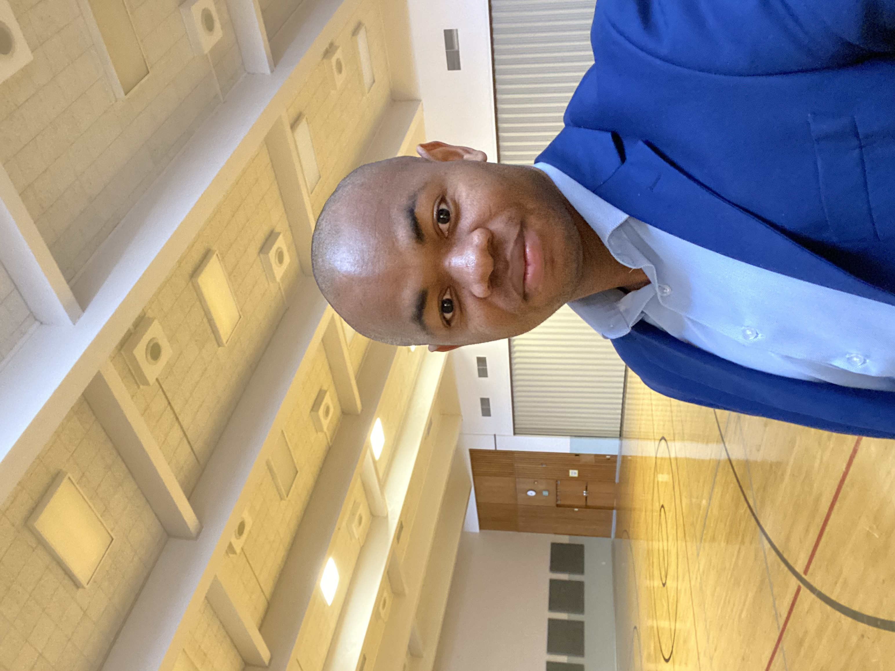
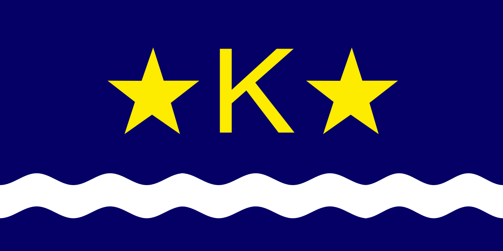

About Me
My name is Franck Tshibala, and I'm originally from the Democratic Republic of the Congo. I moved to the United States five years ago, and I'm currently working as a sweeper while pursuing my passion for software development. I have a deep love for soccer, and it has been a part of my life since childhood.
Kinshasa/DRC
Kinshasa, the capital city of the Democratic Republic of the Congo, is a vibrant metropolis located along the Congo River. With a population exceeding 11 million people, it stands as one of the largest cities in Africa. Its rich cultural tapestry, bustling markets, and lively music scene make it a dynamic hub of activity and diversity.
kinshasa official flag